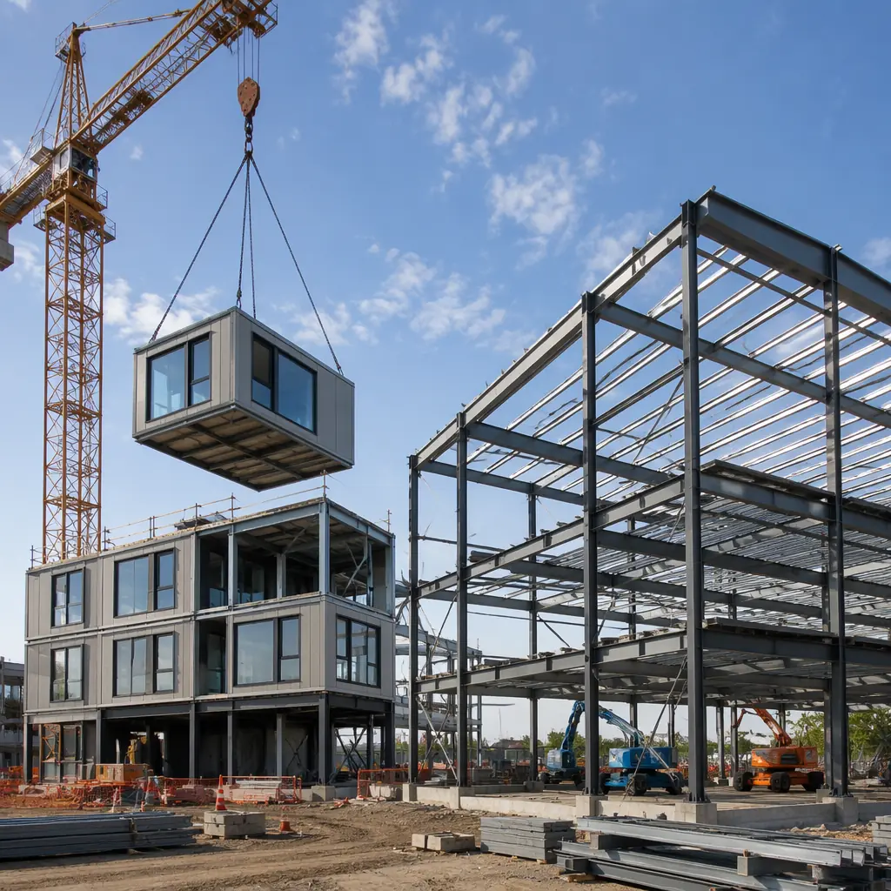
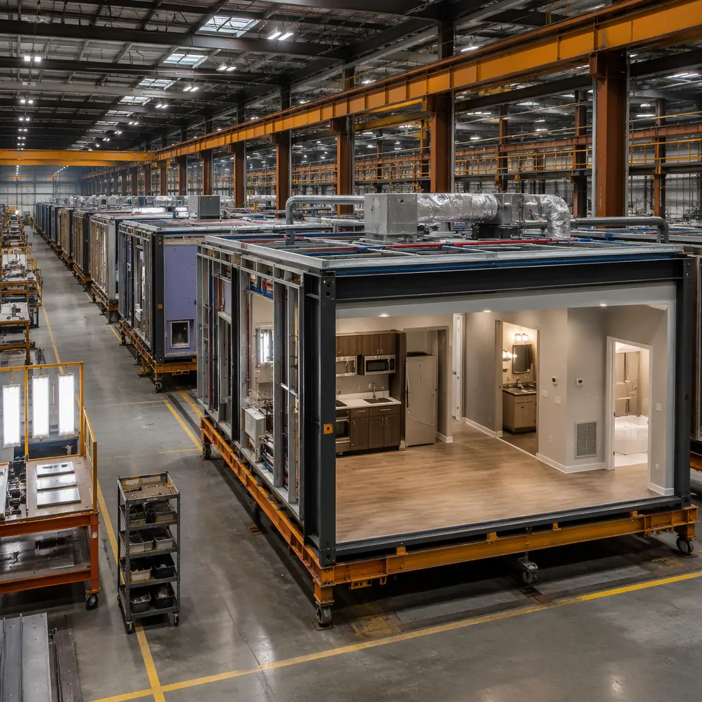
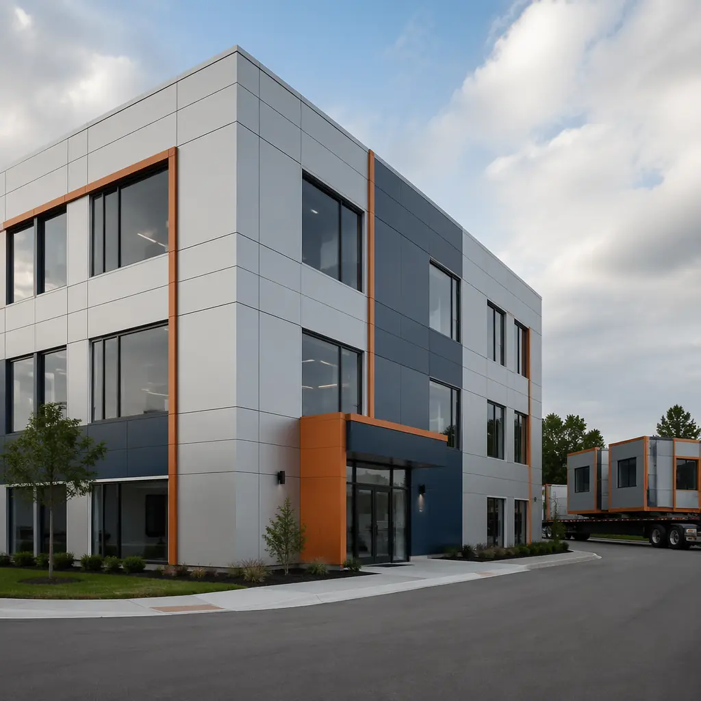

Pre-engineered metal buildings (PEMB) have dominated the commercial and industrial construction landscape for decades. They are the default choice for warehouses, distribution centers, manufacturing facilities, and low-rise retail — and for good reason: PEMB delivers functional, code-compliant structures at industry-leading cost per square foot. But as commercial real estate demands evolve toward adaptable, energy-efficient, and faster-to-occupy buildings, modular construction is increasingly competing for the same project budgets. This comparison breaks down where each method wins — and where one decisively outperforms the other — so developers and project owners can make an informed choice.

Pre-Engineered Metal Buildings: What They Do Well
PEMB systems are engineered off-site and assembled on a concrete slab using bolted steel connections. The structural frame consists of tapered rigid steel columns, clear-span rafters, and cold-formed Z-purlins with metal panel cladding. This system excels in specific scenarios:
Clear-span capability. A PEMB can deliver column-free interior spans of 30 to 80 meters (100–260 ft), making it the go-to choice for aircraft hangars, indoor sports facilities, and bulk storage warehouses where uninterrupted floor space is non-negotiable. Modular construction typically spans 6 to 12 meters per module before intermediate structural support is required, though module-to-module connections can achieve larger effective spans in multi-module configurations.
Ultra-low upfront cost for bare-bones structures. A basic PEMB warehouse shell — steel frame, metal wall panels, metal roof, concrete slab — runs $15–25 per square foot in most North American markets. This is the absolute floor for enclosed commercial space and approximately 40–55% below the cost of a comparable modular building at the shell stage. However, this comparison is rarely apples-to-apples: the PEMB shell excludes interior finishes, MEP systems, insulation beyond code minimums, and any architectural character. Once you add the interior build-out, the cost gap narrows significantly.
Proven supply chain. The PEMB industry is mature with thousands of manufacturers worldwide. Lead times for standard building kits range from 6 to 12 weeks, and the erection process is well-understood by local contractors in virtually every market. For a deep dive into how modular compares across the broader construction landscape, see our comprehensive modular vs traditional construction analysis.
| Comparison Dimension | PEMB | Modular | Winner |
|---|---|---|---|
| Upfront shell cost/sqft | $15–25 | $40–65 | PEMB |
| Turnkey finished cost/sqft | $120–180 | $110–170 | Modular (5–10%) |
| Construction schedule (20k sqft) | 7–10 months | 4–6 months | Modular |
| Clear-span capability | 30–80m | 6–12m per module | PEMB |
| Energy performance (R-value) | R-10 to R-19 | R-28 to R-34 | Modular |
| Design flexibility (architectural) | Limited | High | Modular |
| Future relocation potential | Partial | Full | Modular |
| 50-year TCO (per sqft) | $430–550 | $360–510 | Modular (12–18%) |
Where Modular Pulls Ahead: Finished Building Economics
The headline PEMB cost advantage — $15–25/sqft for the shell — is compelling but often misleading as a project comparison. A PEMB shell is just that: a shell. To create an occupied commercial building, you still need interior framing, drywall, flooring, ceiling systems, MEP rough-in and finishes, insulation upgrades, windows and storefront systems, and architectural exterior treatments. These interior fit-out costs typically add $100–160/sqft to the PEMB shell and consume 4–6 months of on-site construction time — during which the building generates zero revenue.
Modular construction takes the opposite approach: modules arrive on site with interior finishes, MEP systems, windows, doors, and even fixtures pre-installed. The on-site work is reduced to foundation preparation, module setting and connection, utility tie-ins, and minimal finish work at module joints. For a typical 20,000 sqft commercial building, this parallel production strategy — site work and factory work happening simultaneously — compresses the total project timeline by 30–40% compared to PEMB with interior build-out. For a more detailed breakdown of modular construction economics, see our 2026 modular cost per square foot guide and our modular ROI analysis for developers.

Energy Performance: The 30-Year Cost Multiplier
This is where the economics decisively favor modular. A standard PEMB with fiberglass blanket insulation between the metal panels and structural members achieves R-10 to R-19 — adequate for unconditioned warehouse space but expensive to heat and cool when the building is occupied. The metal panel-to-structure connections create thousands of thermal bridges, and field-applied insulation is notoriously inconsistent at corners, eaves, and penetrations.
Modular buildings achieve R-28 to R-34 through continuous exterior insulation, staggered-stud framing that eliminates thermal bridging, and factory-sealed envelope integrity verified by blower-door testing on every module. For an occupied commercial building (office, retail, healthcare) in a climate zone with significant heating or cooling loads, the energy cost difference is substantial: approximately $0.45–0.75/sqft/year in additional HVAC energy for PEMB vs modular. Over 30 years on a 20,000 sqft building, that's $270,000–450,000 in cumulative energy savings — more than erasing the PEMB's upfront shell cost advantage. For a comprehensive analysis of modular energy performance, see our guide to modular building energy efficiency.
When to Choose PEMB (and When Not To)
Choose PEMB when: the building is unconditioned warehouse or bulk storage with minimal occupancy; you need clear spans exceeding 20 meters; the site is in a market with abundant low-cost PEMB erection contractors; architectural character is not a project requirement; or the building is a short-term speculative investment where lifecycle costs accrue to a future owner.
Choose modular when: the building will be occupied by people (offices, retail, healthcare, education); energy performance and occupant comfort matter to the business case; you need architectural flexibility to meet zoning, brand, or community requirements; the project timeline is revenue-critical (hotels, apartments, retail tenants paying rent); or the building may need to be relocated, expanded, or reconfigured in the future.
For projects that combine both needs — a warehouse with attached office space — a hybrid approach often delivers the best of both worlds: PEMB for the high-bay storage area, modular for the occupied office wing. For a deeper look at combining construction methods, see our hybrid construction approaches comparison. For industrial applications where either method could work, our modular industrial warehouse analysis provides project-type-specific guidance.

Quality Control: Factory Floor vs. Open Field
PEMB components are factory-fabricated — the steel columns, rafters, and panels are cut, welded, and punched to specification in a controlled environment. This is good. But the assembly happens on site, exposed to weather, performed by crews who may be erecting their first PEMB of that manufacturer's design. Weld quality, bolt torque, and panel alignment depend entirely on field conditions and contractor skill.
Modular construction extends factory control through to finished building. MODURA modules undergo 140+ quality checkpoints during fabrication — structural weld inspection (UT/MT), blower-door envelope testing, MEP pressure testing, finish inspection — all before the module leaves the factory floor. For projects where quality consistency across multiple buildings matters (franchise rollouts, multi-site government contracts, campus developments), this factory repeatability is a structural advantage, not just a speed advantage. Our factory quality control systems analysis details the inspection protocols that make this possible.
The Decision Framework: 5 Questions to Ask
Before choosing between PEMB and modular for a commercial project, answer these five questions with your project team:
- Who occupies this building, and for how many hours per day? If the answer is "people, 40+ hours/week," the energy performance and comfort advantage of modular becomes the dominant economic factor.
- What is the revenue cost of construction delay? If the building generates $20,000/month in rent or revenue, every month saved in construction is $20,000 to the bottom line. Modular's 30–40% schedule compression directly monetizes time.
- Do you need clear spans over 20 meters? If yes, PEMB is the answer for that portion of the building. If no, modular handles the span requirements of virtually all occupied commercial typologies.
- Will the building need to adapt over its life? Modular buildings can be expanded horizontally or vertically with minimal disruption to occupied space. PEMB expansion typically requires new foundation work and structural tie-ins that are more invasive.
- What is your holding period? For a build-and-flip with a 3–5 year horizon, PEMB's lower upfront cost may win. For a long-term hold (10+ years), modular's lifecycle cost advantage compounds decisively. Our 50-year TCO analysis quantifies this difference in detail.